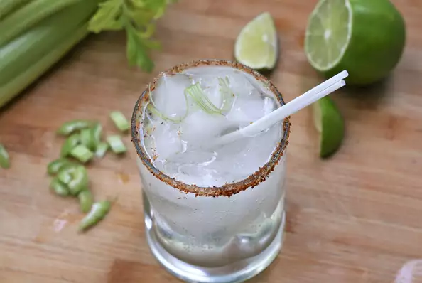

Celerita

A Refreshing Drink!
Use Juli's Any Seltzer Cocktail Formula from our magazine to make this celerita. Turn flavored bubbly water or hard seltzer into a cocktail for two in no time flat with this easy recipe. Garnish this with salt and chipotle pepper or Hatch chile powder on the rim and a leafy celery stalk.
Ingredients
- 4 tablespoons chopped celery
- 1 teaspoon white sugar
- 3 ounces tequila
- 1 can lime-flavored seltzer water
Steps
- Muddle celery and sugar together in a mixing glass until crushed. Add tequila and stir to dissolve sugar. Strain into 2 ice-filled Collins or rocks glasses. Top with seltzer.
Return to main page